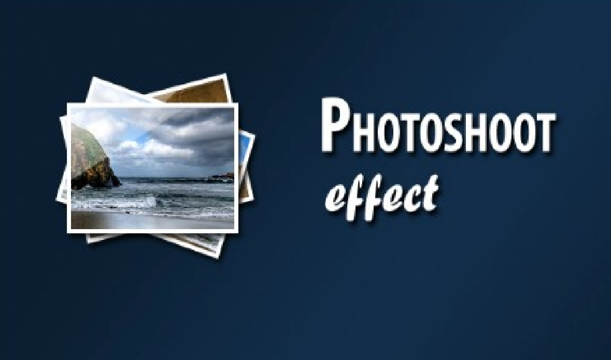

In this tutorial, we are creating a photo shoot effect with our just-released PhotoShoot jQuery plug-in. With it you can convert a regular div on the page into a photo shooting stage simulating a camera-like feel.
Potential clients want to see who they'll be working with. They want to hire people, not stock photography. We produced a custom photo shoot to bring the people of Paterson Buchanan front and center and to underscore the firm's open and welcoming style. Vivid images illustrate Paterson Buchanan's wide range of clients, as well as their commitment to the picturesque region the firm serves.